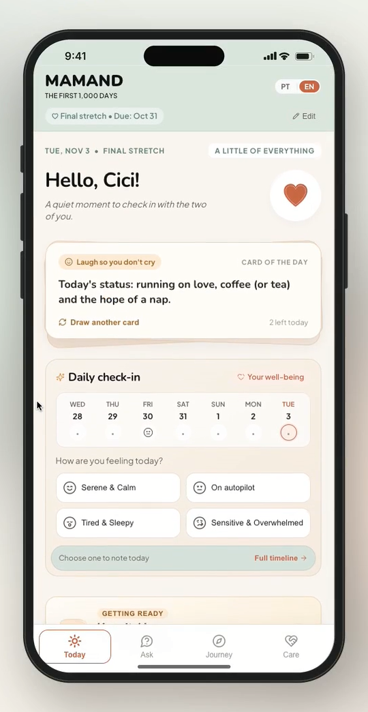
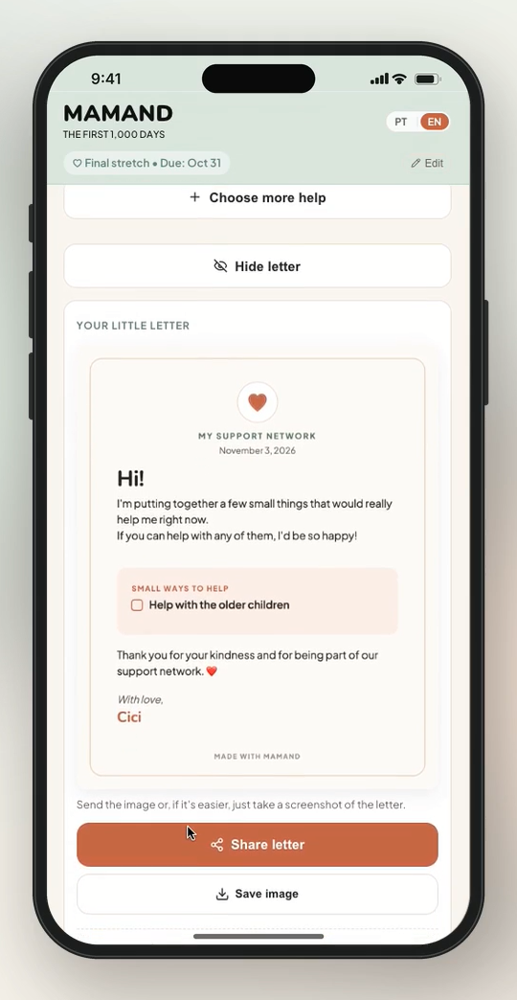
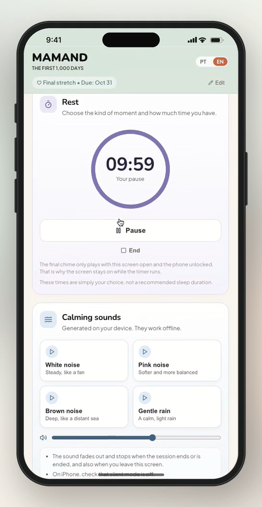
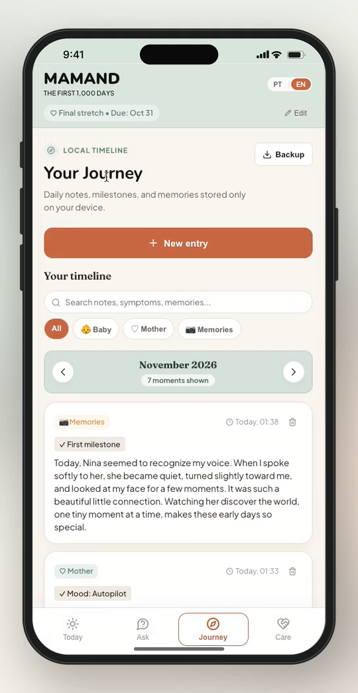
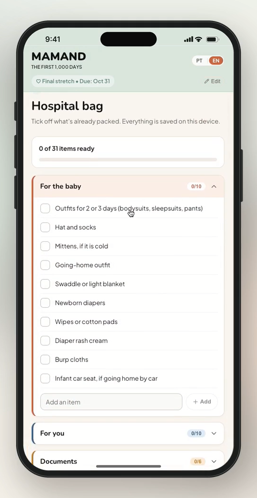
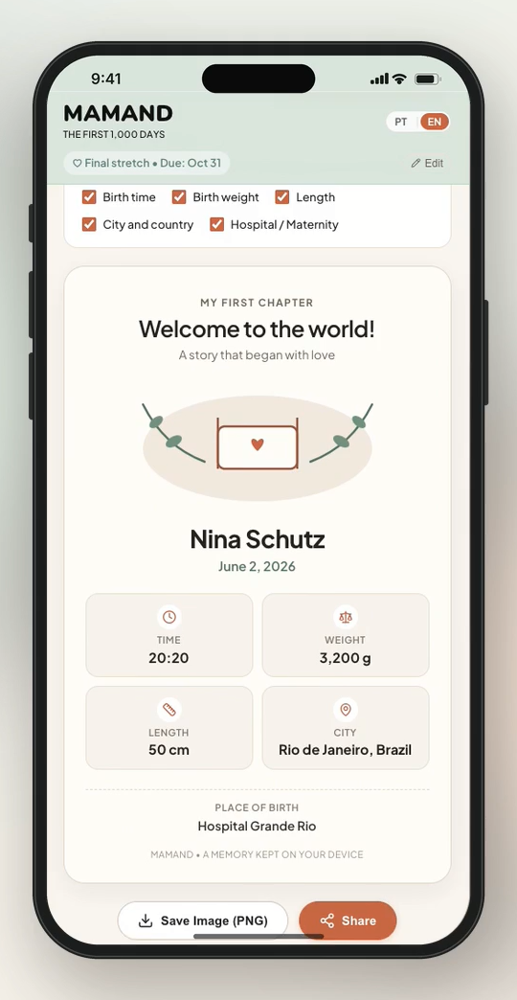
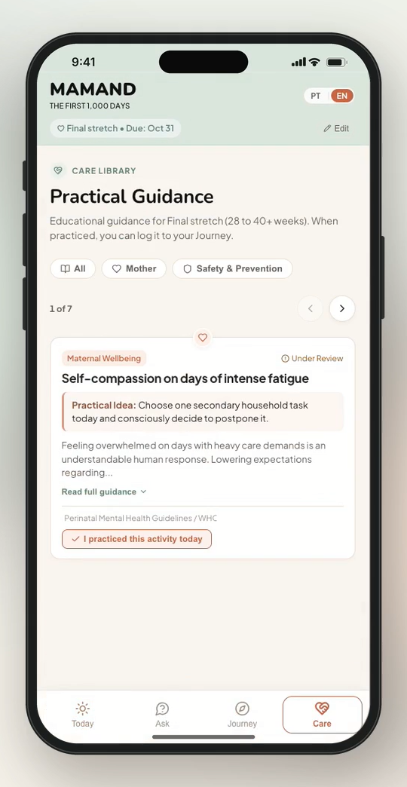
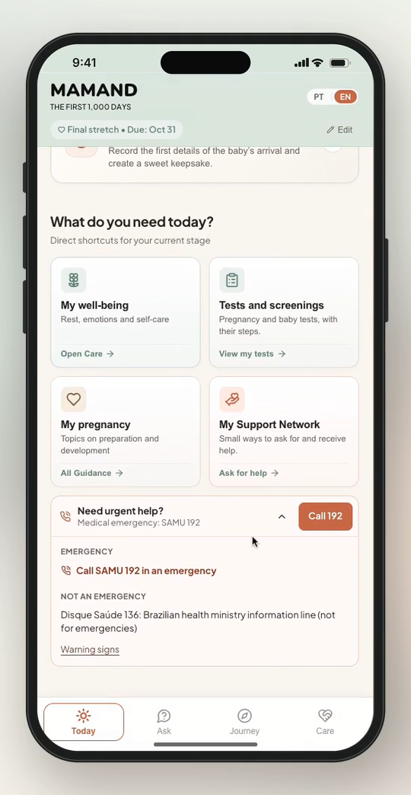
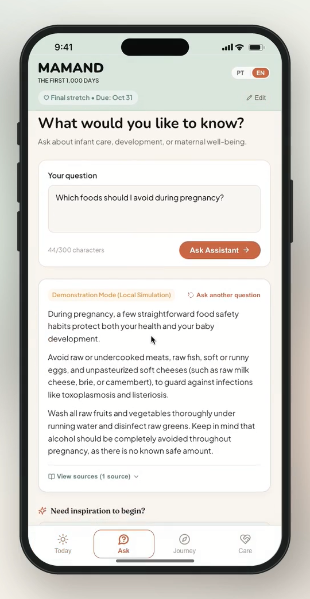

MAMAND
Because care doesn't begin at the hospital, and it doesn't end when families return home.
Porque o cuidado não começa no hospital e não termina quando a família volta para casa.
Bridging the everyday gap between healthcare visits.
Preenchendo a lacuna cotidiana no intervalo entre as consultas de saúde.
In Brazil and many underserved contexts, women often navigate pregnancy and early motherhood with limited practical support between clinical appointments. Questions, emotional overload, breastfeeding difficulties, and sudden shifts in routine arise daily — while mobilizing family help or reaching primary health services can be challenging. For mothers facing economic barriers or unstable internet connectivity, important experiences and health observations are easily fragmented or forgotten.
No Brasil, muitas mulheres vivenciam a gestação e o início da maternidade com pouco apoio prático no intervalo entre as consultas de saúde. Dúvidas, sobrecarga emocional, dificuldades na amamentação e mudanças na rotina surgem frequentemente no dia a dia, enquanto obter auxílio de familiares ou serviços de saúde pode ser um desafio. Para mulheres que enfrentam barreiras econômicas ou acesso limitado à internet, essa lacuna torna-se ainda maior, fazendo com que vivências e necessidades importantes acabem fragmentadas ou esquecidas.
Unlike traditional baby-tracking apps that focus solely on infant metrics, MAMAND places maternal well-being at the center of the first 1,000 days — helping mothers reflect on how they feel, coordinate a practical support network, record essential pregnancy and baby care notes, and export clear summaries to prepare for primary care visits.
Diferente dos aplicativos tradicionais de acompanhamento infantil, o MAMAND coloca o bem-estar materno no centro dos primeiros 1.000 dias — auxiliando as mulheres a refletir sobre como se sentem, organizar auxílio prático com uma rede de apoio, registrar cuidados essenciais da gestação e do bebê e exportar resumos claros na preparação para consultas de saúde.
Mother-Baby Dyad
Foco na Dupla Mãe-Bebê
Daily maternal check-ins, pregnancy and infant journals, exam and screening logs, birth records, emergency contacts, practical support planning, and exportable visit preparation summaries.
Acompanhamento do bem-estar materno, diários da gestação e do bebê, registros de exames e triagens, planejamento de rede de apoio, contatos de emergência e resumos para preparação de consultas.
Offline-First & Local
Offline-First e Local
A functional React & TypeScript PWA requiring no login. Family records stay on the user's device with local backup and restore — validated through automated testing and internal browser checks across mobile and desktop environments.
PWA funcional em React e TypeScript que não exige login. Os dados permanecem no dispositivo da usuária com backup e restauração local — validado por meio de testes automatizados e verificações internas em navegadores nos ambientes mobile e desktop.
Responsible AI Governance
Governança de IA Segura
An experimental RAG assistant (Google Gemini) with rule-based red-flag detection, intentionally held from public release until clinical validation and supervised safety testing are completed.
Assistente experimental em RAG (Google Gemini) com camada de detecção de sinais de alerta, mantido suspenso na versão pública até a conclusão de validação clínica e testes supervisionados.
Designed for low connectivity, emotional clarity, and everyday support.
Projetado para baixa conectividade, clareza emocional e apoio cotidiano.

Daily maternal well-being check-in and gentle emotional reflection.
Check-in diário de bem-estar materno e acolhimento emocional.

My Support Network: turning practical needs into a shareable letter for family.
Rede de Apoio: transformando tarefas práticas em um convite compartilhável.

"A moment for me": rest timer, guided breathing, and offline calming sounds.
"Um momento para mim": pausa guiada, respiração e sons relaxantes offline.

Chronological timeline for Baby, Mother, and Memories with local device backup.
Linha do tempo para Bebê, Mãe e Memórias com backup local no dispositivo.

Structured checklists for the baby, mother, documents, and birth partner.
Checklists práticos para o bebê, a mãe, documentos e acompanhante.

On-device birth record and customizable keepsake card.
Registro de nascimento salvo no dispositivo e cartão afetivo personalizável.

Stage-aware guidance cards structured for clinical review and local adaptation.
Orientações práticas por fase, estruturadas para revisão e validação clínica.

Quick access to public health hotlines (SAMU 192 / Disque Saúde 136) and warning signs.
Acesso rápido a canais de emergência (SAMU 192 / Disque Saúde 136) e sinais de alerta.

Experimental RAG sandbox grounding responses in documented public health sources.
Ambiente experimental em RAG associando dúvidas a fontes documentadas de saúde pública.
Reliable sources are necessary, but not sufficient for safe medical guidance.
Fontes confiáveis são necessárias, mas não suficientes para uma orientação segura em saúde.
During development, we explored an experimental RAG assistant (Google Gemini) with a rule-based safety layer to ground pregnancy and infant care questions in documented public health sources. While internal tests confirmed technical feasibility without fabricated citations, they revealed a critical limitation: even when citing trusted references, responses could still sound overly reassuring around potentially serious symptoms.
Durante o desenvolvimento, testamos um assistente experimental em RAG (Google Gemini) com uma camada de regras para sinais de alerta, associando dúvidas a fontes documentadas de saúde pública. Embora os testes internos tenham comprovado a viabilidade técnica sem referências inventadas, eles revelaram uma limitação essencial: mesmo citando fontes confiáveis, algumas respostas transmitiam tranquilidade excessiva diante de sintomas potencialmente graves.
That finding directly guided our engineering decisions: we suspended the assistant from the public build, prioritized risk detection and evidence verification, and established clinical review and supervised evaluation as strict prerequisites before release. Meanwhile, the offline-first PWA operates independently of AI, keeping personal health records strictly on the user's device.
Essa constatação orientou diretamente nossas decisões técnicas: suspendemos o assistente da versão pública, priorizamos a detecção de riscos e a verificação de evidências, e estabelecemos a revisão clínica e a avaliação supervisionada como pré-requisitos antes de qualquer lançamento. Paralelamente, o aplicativo offline funciona de forma independente de IA, mantendo os registros pessoais exclusivamente no dispositivo da usuária.
From founder-built prototype to community health pilot.
Do protótipo construído pela fundadora ao piloto em saúde comunitária.
Developed through the founder's contributions in product strategy, research, UI/UX design, front-end engineering, testing, and documentation, MAMAND is an open-source digital health project that builds on experience from Baby Kangoo and pediatric healthcare projects.
Desenvolvido por meio da atuação da fundadora em estratégia de produto, pesquisa, design de UI/UX, engenharia front-end, testes e documentação, o MAMAND é um projeto de saúde digital em código aberto que se baseia na experiência adquirida com o Baby Kangoo e projetos voltados à saúde pediátrica.
The next stage focuses on independent clinical validation, responsible AI development, and community-based pilots, including exploring potential collaboration with primary healthcare services within Brazil's Unified Health System (SUS).
A próxima etapa concentra-se na validação clínica independente, no desenvolvimento de IA responsável e em projetos-piloto comunitários, incluindo a exploração de uma potencial colaboração com serviços de atenção primária no âmbito do Sistema Único de Saúde (SUS).
Release updated open-source prototype (Apache 2.0), onboard clinical reviewers, initiate privacy, regulatory, and content licensing reviews, and continue institutional outreach to explore potential collaboration with Brazil's Unified Health System (SUS).
Lançar o protótipo de código aberto atualizado (Apache 2.0), envolver avaliadores clínicos, iniciar avaliações de privacidade, regulação e licenciamento, e dar continuidade à articulação institucional para explorar uma possível colaboração com o SUS.
Validate priority maternal health content and exam catalogs, enhance accessibility, conduct usability testing with 20 families and 5 healthcare professionals, and refine AI safety guardrails under clinical supervision.
Validar conteúdos prioritários de saúde materna e catálogos de exames, aprimorar a acessibilidade, realizar testes de usabilidade com 20 famílias e 5 profissionais de saúde e refinar travas de segurança da IA sob supervisão.
Pilot MAMAND with 50–100 families in Brazil, exploring participation through primary care services and community health workers via institutional agreements, evaluating maternal well-being, support networks, and visit preparation.
Realizar projeto-piloto com 50 a 100 famílias no Brasil, explorando a participação por meio de serviços de atenção primária e agentes comunitários de saúde mediante acordos institucionais, avaliando bem-estar materno, rede de apoio e preparação para consultas.
Publish pilot findings and open-source improvements, assess readiness for supervised AI evaluation, and explore expansion to additional primary healthcare contexts.
Publicar os resultados do piloto e melhorias no código aberto, avaliar a prontidão para avaliação supervisionada da IA e explorar a expansão para outros contextos de atenção à saúde.
Interested in reviewing the technical documentation, clinical validation protocol, open-source repository, or collaborating on our pilot with families and primary healthcare partners in Brazil?
Tem interesse em conhecer a documentação técnica, o protocolo de validação clínica, o repositório de código aberto ou colaborar com o piloto junto a famílias e parceiros de saúde comunitária no Brasil?